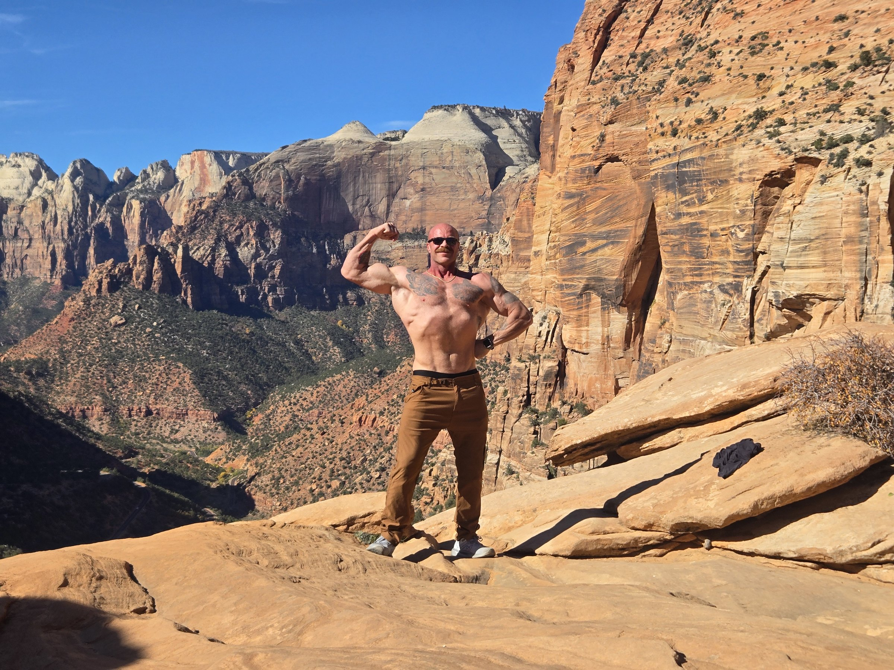
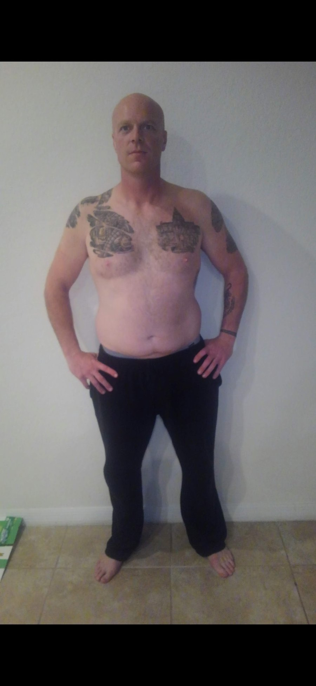

Programming that matches your recovery, not your ambition.
Volume is prescribed against what you can actually recover from at your age, training history, and life load. That usually means less than you think — and progress you can finally see.

Hypertrophy coaching for lifters 35+ who are done running programs they can't evaluate. Every decision made on numbers, not vibes. You execute; I steer.
Pattaya, Thailand · Coaching worldwide
You've trained hard for years and you're still negotiating with a plateau. You've run 5/3/1. You've run a push/pull/legs split. You've run something a YouTube channel convinced you was the missing piece.
Each one worked for about six weeks. Then you couldn't tell anymore — so you switched again.
The problem isn't effort — it's that nobody's watching the data.
Here's what actually changed after 35: not your ability to build muscle — the research is clear that you still can. What changed is your margin for error. Recovery capacity narrowed. Junk volume that you used to absorb now just costs you.
The program that built you at 27 is now quietly holding you back, and nothing about how it feels will tell you that.
Stop running experiments on yourself. Run a system.
Pick the level of contact you need. The programming quality doesn't change — only how often I'm in it with you. Every tier is by application.
The Plan, Without the Hand-Holding
You don't need motivation. You need to stop guessing. Self-driven lifters only — you bring the discipline, I bring the plan.
Structure Plus Accountability
You know your way around a barbell. What you don't have is someone reviewing your week and telling you what to change — so nothing changes.
Full Access. Nothing Left to Chance.
The closest thing to having me in your corner daily. Contest prep included when you're ready for the stage.
Not sure which tier fits? Apply and I'll tell you honestly — and walk you through pricing and paid-in-full options on the call.
Veteran & First Responder Rate
Premium 1:1 at a standing discount — nothing stripped out, nothing watered down, for as long as you train with me. Veterans, active duty, law enforcement, fire, EMS. Mention your service when you apply.
Four things that make the difference.
Volume is prescribed against what you can actually recover from at your age, training history, and life load. That usually means less than you think — and progress you can finally see.
You'll know what each mesocycle is testing and what result would count as success. When something doesn't work, we know why, and we change one variable — not the whole plan.
Your weight, waist, training performance, sleep and biofeedback go in. What comes back is me on video, walking through the numbers and showing you exactly what changes and why.
You'll know the why behind every change. The goal is a lifter who can eventually read his own data — not one who needs me forever.

The coach
I'm Jordan Schwartz. I'm a competitive bodybuilder and a J3U-certified coach, and I train and coach out of Pattaya, Thailand.
I coach lifters 35+ because it's the problem I understand from the inside — managing recovery, training around a real life, and building muscle on a body that doesn't respond the way it did fifteen years ago.
I also still compete. Which means the protocols I put you on are the ones I run on myself, under conditions where getting it wrong is visible on stage.
More about how I work →Same problem, same age bracket, same margin for error. The difference was measuring it.

I wasn't a lifelong athlete who stayed lean. I was a guy who had let it go and had to rebuild — past 35, with the same narrowed recovery window I now program around for clients.
That's why the method isn't theoretical. I needed it before I sold it.
“Following your direction has given me more confidence in the process. I'm in uncharted territory — I've never been this deep or this consistent in one direction. Your confidence in me, and your stern, no-nonsense approach, has brought out the best in me.”
“My wife has even seen a change in my drive.”
“It was exactly what I needed. I was at a point where I could only improve with someone who knows what he's doing and makes the right adjustments — which is exactly what you did. Being able to ask questions and get confirmation makes the whole thing far more doable, and a lot more enjoyable.”
“I'd recommend this to just about anyone, even if it's only one session.”
No subscription required. Open to everyone.
$149
You paid for the labs. Then you got a PDF full of reference ranges and a “looks normal.” Marker-by-marker review, plain-English breakdown, and a 30-minute call to walk through it.
Learn more$125
Online coaching gets you 95% of the way. Sometimes the last 5% is 90 minutes under the bar together — technique work, hands-on correction, video of the key fixes.
Learn moreTrusted Research-Product Supplier
Order from my supplier, Aligned Aminos — use code JORDAN10 to save 10%.
I keep the roster small so each program gets built and revised properly. Tell me where you're stuck and what you've already tried — if I'm not the right coach for your goal, I'll tell you and point you somewhere better.
Apply for CoachingJust want your labs explained? Blood Work Review — no subscription needed